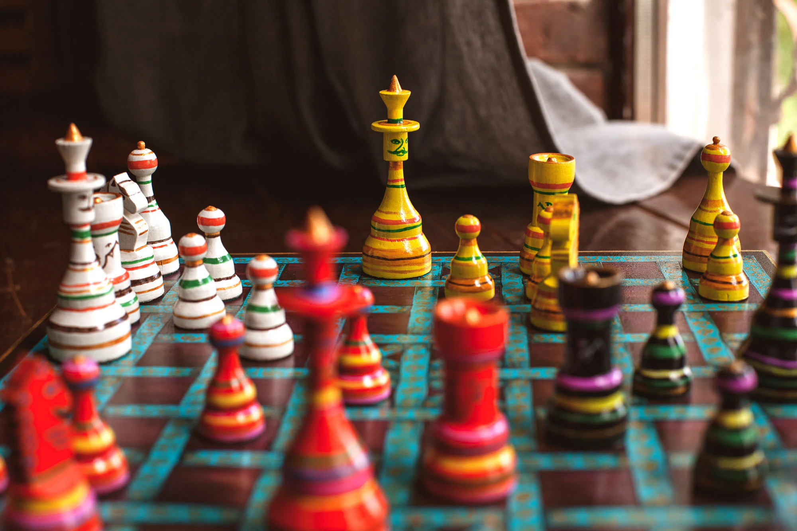
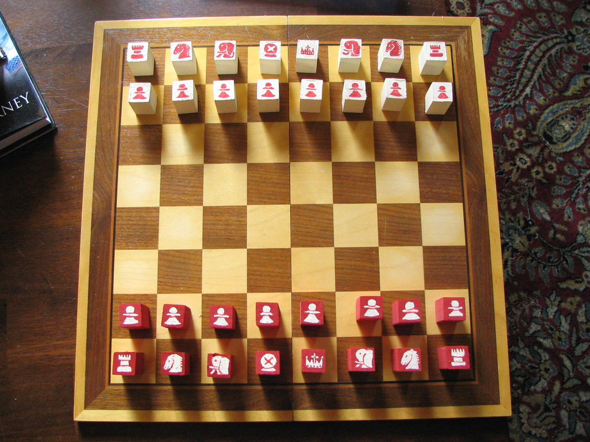
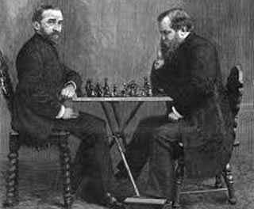

Introduction
Explore the captivating history of chess, from ancient India's "chaturanga" to its evolution across medieval Europe. Uncover the intellectual fervor of the Renaissance, the birth of competitive chess in the 19th century, and the game's dynamic journey through the 20th century. From Soviet dominance to the rise of iconic players and the advent of computers challenging human champions, witness the game's global prominence. In the modern and digital age, experience chess's transformation into a worldwide phenomenon through online platforms, esports, and the enduring allure of strategic mastery in today's ever-evolving chess landscape.
The Origins of Chess
6th Century - 15th Century: Chess, a game of strategic brilliance and intellectual prowess, traces its roots to ancient India in the form of "chaturanga." Originating in the 6th century, this early version of chess featured pieces representing infantry, cavalry, elephants, and chariots. The game's evolution was marked by the migration of ideas, as it made its way to Persia and transformed into "shatranj," gaining popularity in the Islamic world.

Spread to the Islamic World
7th Century - 10th Century: Chess found fertile ground in the Islamic world between the 7th and 10th centuries. The game, now known as "shatranj," became a favored pastime among scholars and nobility. Islamic scholars played a crucial role in refining the rules, setting the stage for chess to become a cultural phenomenon beyond its Indian origins.

Introduction to Europe
9th Century - 15th Century: The journey of chess into Europe unfolded through the Iberian Peninsula, notably in Spain and Italy. The game's entry into Europe led to further adaptations, and by the 15th century, chess began to resemble the modern version we recognize today. This period marked a crucial transition as chess found a new home in the Western world.
Renaissance and Modern Chess
15th Century - 19th Century: The Renaissance era witnessed a profound transformation in chess. The game's rules were refined, and new strategies emerged. Notably, the queen gained expanded powers, and the 64-square board became standardized. Chess literature flourished during this period, documenting the evolving tactics and contributing to the intellectual richness of the game.
The Birth of Chess Competitions
19th Century: The 19th century heralded a new chapter for chess with the advent of formal competitions. Tournaments became commonplace, providing a platform for players to showcase their skills. The idea of a world chess champion materialized, culminating in Wilhelm Steinitz's recognition as the first official champion in 1886. This era laid the groundwork for the competitive landscape of modern chess.

Chess in the 20th Century
20th Century: The 20th century saw chess rise to unprecedented heights, with the Soviet Union dominating the chess scene. The era produced legendary players and grandmasters, contributing significantly to the game's global appeal. Bobby Fischer's historic victory against Boris Spassky in 1972 captivated the world, bringing chess to the forefront of international attention.
Computers and Chess
20th Century - Present: The latter half of the 20th century witnessed a groundbreaking intersection between chess and technology. IBM's Deep Blue made history in 1997 by defeating world champion Garry Kasparov. This marked the beginning of a new era where chess engines, such as Stockfish and AlphaZero, revolutionized gameplay, challenging and enhancing human understanding of the game.
Modern Era and Globalization
Late 20th Century - Present: Chess entered the modern era as a global phenomenon, transcending cultural and geographical boundaries. International competitions, online platforms, and a diverse player base have fueled the game's popularity. Magnus Carlsen's reign as World Chess Champion since 2013 has exemplified the global and competitive nature of contemporary chess.

Chess in the Digital Age
21st Century - Present: In the 21st century, chess has seamlessly integrated into the digital landscape. Online platforms have democratized access, allowing players from every corner of the globe to compete and learn. The rise of streaming and esports has given chess a dynamic and entertaining dimension, attracting new audiences and rejuvenating interest in this ancient game.